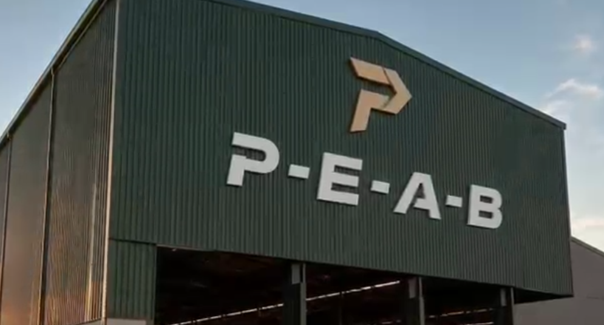

portal geografico sul-americano
PGS — INFORMAÇÃO E TERRITÓRIO
PGS — INFORMAÇÃO E TERRITÓRIO
reportagem top, mas queria uma sobre florestas a noite
seloko essa tal de PEAB ta de parabens
caramba fazia tempo que não via algo sem aquele maldito balão
.jpeg)
esse tal de levy correia, tenho é medo do que ele vai fazer no futuro
olha... eu meto a porrada nos tratores mas, saio levemente ferido
A empresa PEAB apresenta tecnologia inovadora em adubos e proteção de lavouras com potencial de impacto mundial.
Estamos aqui para acompanhar um marco que pode representar um grande avanço no setor do agronegócio. Um novo projeto promete trazer uma tecnologia inovadora para a produção agrícola, abrindo caminho para uma evolução não apenas no Brasil, mas com potencial impacto em todo o mundo.
Levy Correia, criador do projeto, explica: "Eu e minha equipe trabalhamos durante muitos anos no desenvolvimento deste projeto, focado na criação de um novo tipo de adubo e sistema de proteção para plantas e lavouras inteiras. Foi um processo longo, que exigiu pesquisa, testes e muito esforço coletivo."
"Hoje, com muito orgulho, venho representar a nossa empresa, a PEAB, e apresentar esse projeto que busca contribuir para a evolução do agronegócio brasileiro, trazendo mais eficiência, sustentabilidade e inovação para o campo."

Título do vídeo 2
1 de janeiro de 2026
🔒 Vídeo bloqueado
1 de janeiro de 2026